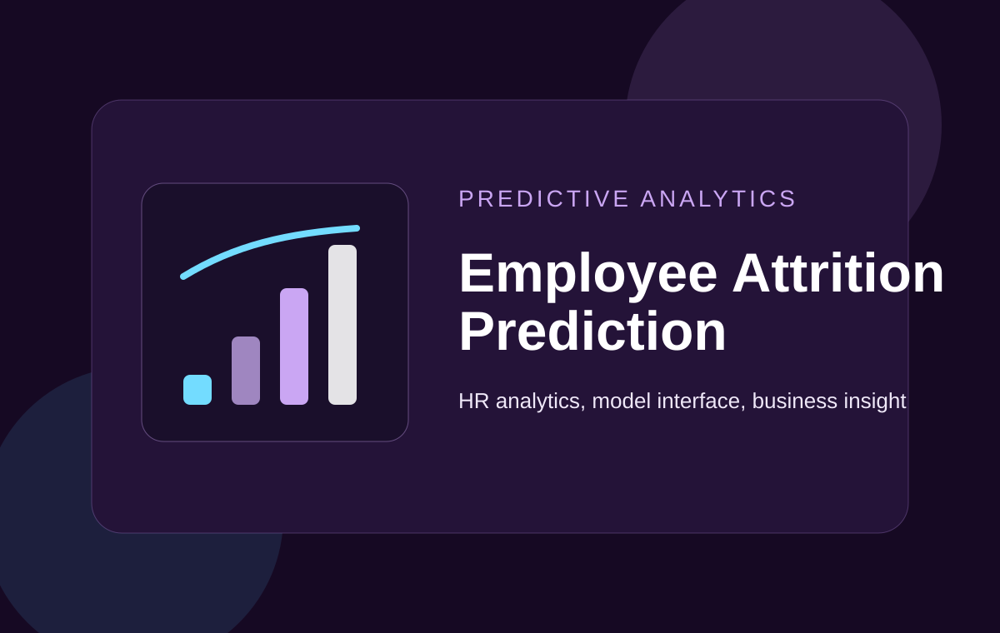

Role
ML Web App Developer
Machine learning web application designed to explore attrition patterns and present prediction results through an accessible interface.

ML Web App Developer
Prediction app build
Interactive prediction interface for HR-oriented attrition analysis.
This project combines predictive modeling with web delivery so attrition-focused analysis can be explored through a practical interface. It demonstrates applied analytics in a business-oriented context.